原文连接:https://www.cnblogs.com/xxbiao/p/12048893.html
既然选择，就注定风雨兼程！
开始吧！
准备：Idea201902/JDK11/ZK3.5.5/Gradle5.4.1/RabbitMQ3.7.13/Mysql8.0.11/Lombok0.26/Erlang21.2/postman7.5.0
难度：新手--战士--老兵--大师
目标：1，使用“雪花算法”生成订单ID 2，使用集中式Redis生成订单明细ID，3.Logback+slf4j打印日志
步骤：1.项目架构及代码基础设施，见往期文章。2.整体思路：其实ID的生成有很多种方案，如UUID，DB自增id，那分布式环境下有何方案呢？UUID也可以，但无规律；DB生成法，间隔初始值加步长，水平扩展差；雪花算法，服务器间时间同步是个问题，Redis集中式生成，容易单点瓶颈。总结而言，各有千秋,一是独立式，每个使用者自己生成，二是中心式，ID集中产生再分发。今天我们来看看典型代表: 雪花算法和Redis集中式。3.先说"雪花算法",理解也简单，“世界上没有一片雪花是相同的”顾名思义，雪花算法即是多维度组合，生成一个ID值，且这个值“趋势递增”，其核心构成如下图：
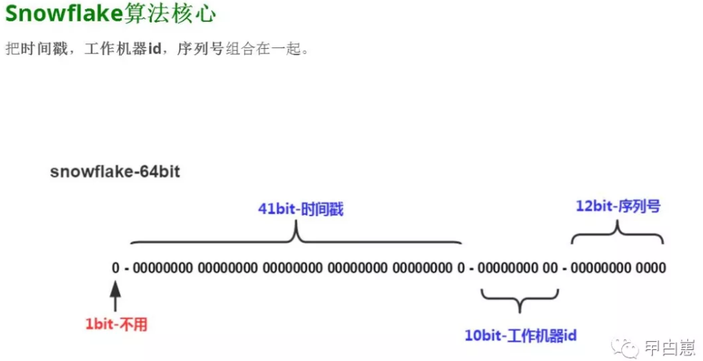
64bit，第一位0固定，二进制符号位，41bit时间戳，注意是当前与初始值相减的值，10bit工作机器id，12bit序列号，毫秒内的计数，其中工作机器id可预先人工指定，最后64位刚好转成Long类型即可。
4.算法生成类，放公共模块，com.biao.mall.common.util.SnowFlake
先来个整体的代码，包含了几个内部方法：
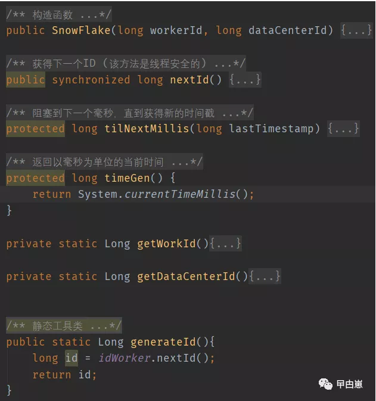
再来分析一下，
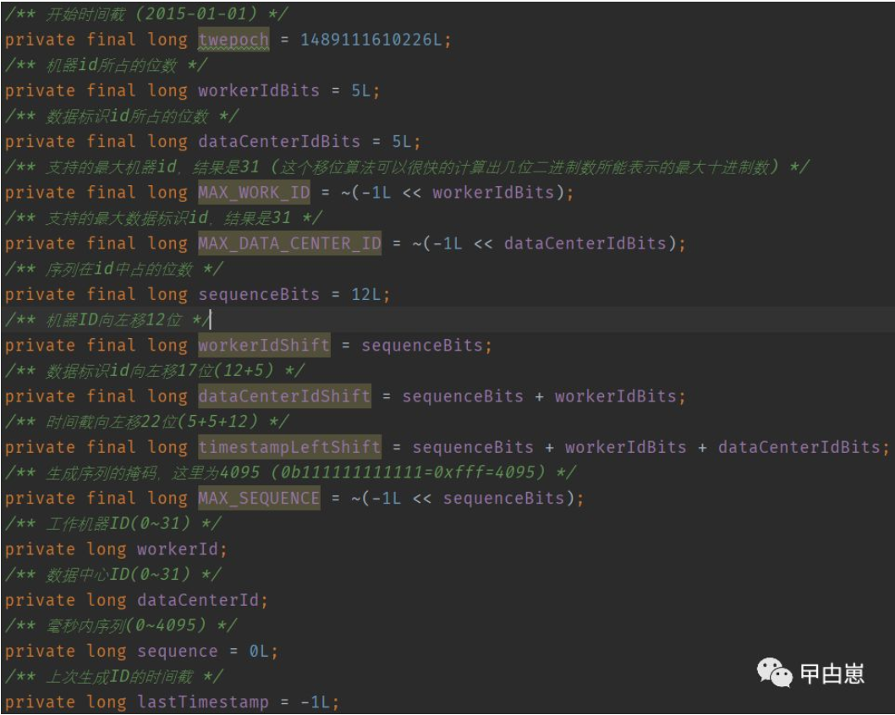
重点看下最大值，使用对-1左移位算法，(二进制右边补0)，再按位取反，举例：最多2位，
~(-1L<<2)-->11111111-->11111100-->00000011-->3，实际上这里，就是(2的n次方-1),因移位算法是效率最高的，因此采用。
private final static long MAX_DATAC_ENTER_ID = ~(-1L << DATACENTER_BIT);
private final static long MAX_WORK_ID= ~(-1L << MACHINE_BIT);
private final static long MAX_SEQUENCE = ~(-1L << SEQUENCE_BIT);
构造函数中判断下数据中心id和主机id是否合法，
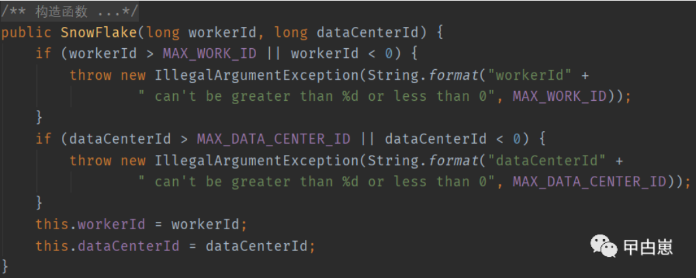
5.算法核心部分,nextId()方法,注意这是个同步方法，线程安全的：
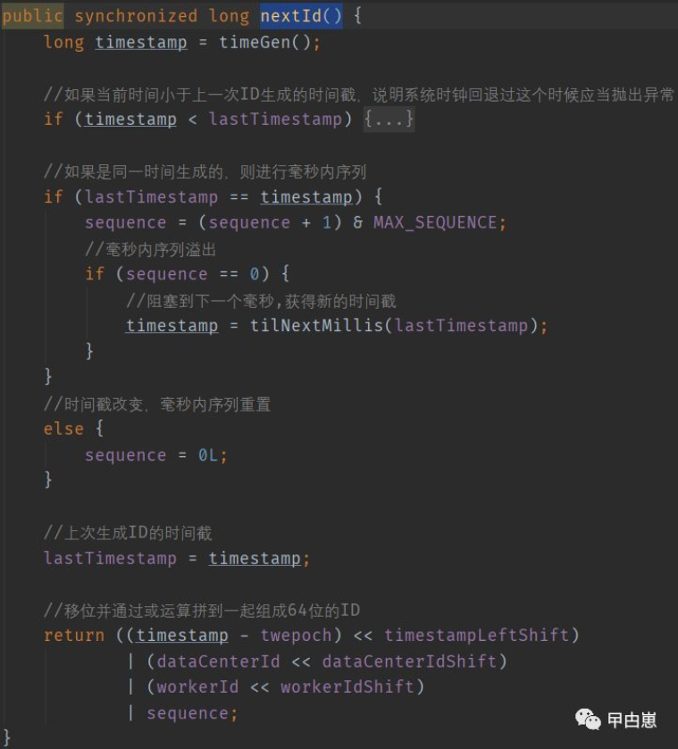
A.先取得当前主机的毫秒，判断下是否小于上个时间戳，这个很重要！因为如果时间回拨，会导致可能的ID重复，因此当遇到时间回拨的情况，可以考虑使用备份的主机ID，这里是直接抛异常了。
B.如果取ID并发非常高，导致时间间隔很小，在同一毫秒内，则序列号自增并和最大序列号"按位与"，这样的目的就是如果序列号达到最大，+1再按位与，就会等于0,(假设2位最大值加1：011+001=100，再100 & 011=000，然后只有2位就成0了)
C. 如果同一毫秒内序列号达到最大归为0，就使用getNextMill(),无限循环直到获得下个毫秒数
D.最后生成id就是时间戳差值，移位再按位或其他部分的数值，
6.再看Redis方案，这个主要是利用Redis速度快的特点，并可以使用Redis集群，就可确保速度和可用性，集中式的好处即统一生产，易控制，但分发受网络波动影响。具体位置在：com.biao.mall.common.util.RedisUitl7.分析重点：类里写了两个生成方式，第一个doGetId()是个简单生成法，直接使用对一个key做自增操作，每次递增一个，但坏处明显，容易暴露一天的订单量！数鸭子的游戏。
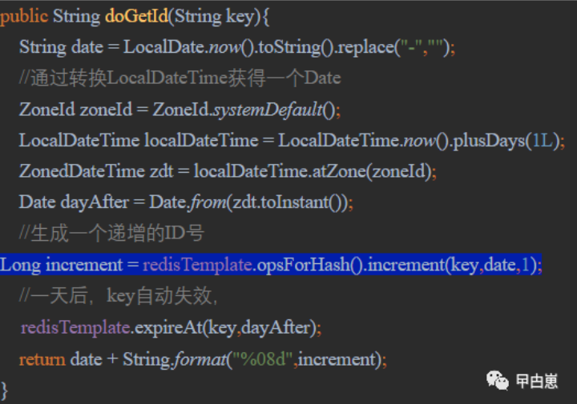
这里使用的是redisAPI的redisTemplate，其有操作如下，即对redis的五种数据类型都有对应的封装方法。
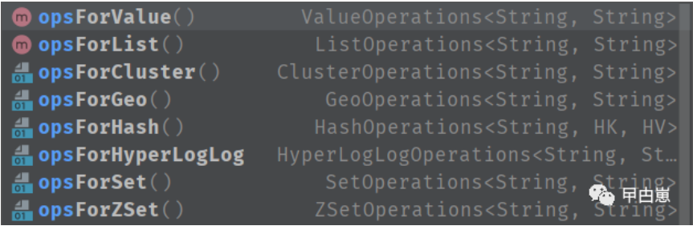
还有一个思路是先缓存，再取值，过程是：先生成一定量的顺序数，打乱顺序，再分成若干段，循环存入redis，取值时，根据全局计数器进行检索取值，
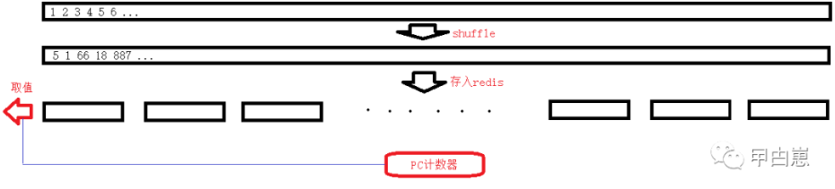
以下为分段存储，每个段都有个keyId。这里为啥，做分段？主要是存取效率问题，显然从一小段中检索数据要快于直接从一个大的List中检索快。

取乱序值方法getShuffleId：因为这个是个开箱即用的静态方法，必须保证首次使用时，初始化计数器，并执行分段存储操作，而应用重启，不重复这个操作，故可以先判断计数器是否已存在。取值是先找到分段的list的key，再找到偏移量index：
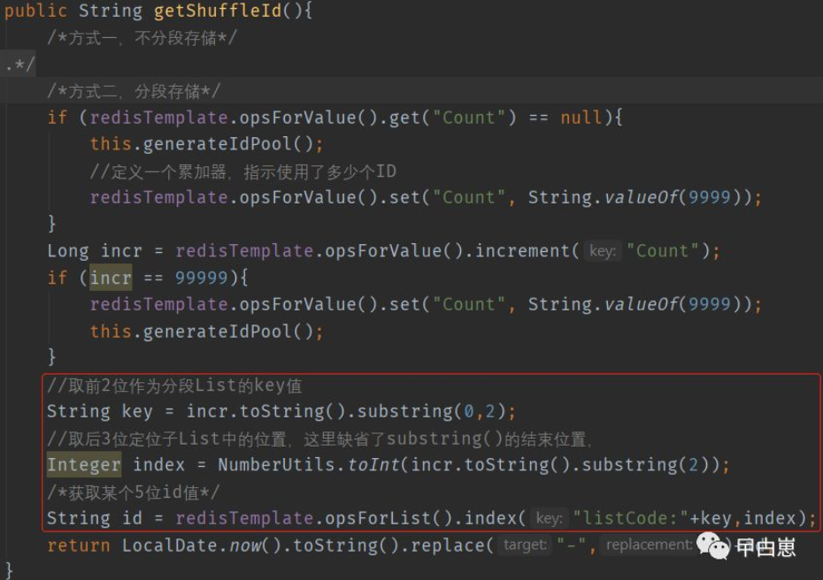
7.测试一下，我写了个controller：com.biao.mall.business.controller.MsgProducerController
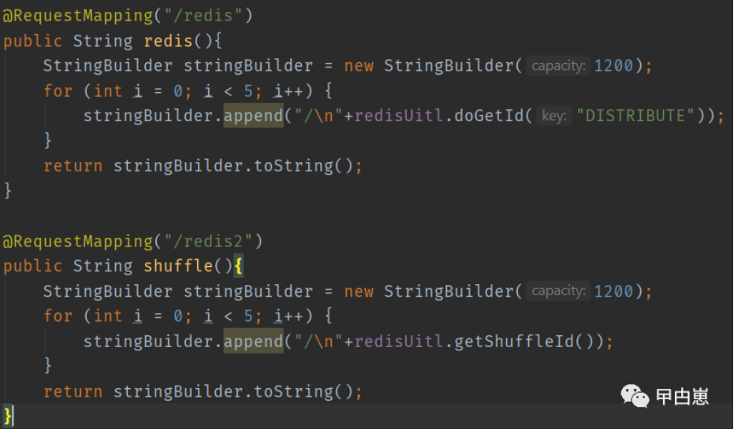
启动Redis-->zk-->business：
可以看到，前面两图就是顺序的，而后面的两图则是乱序的。
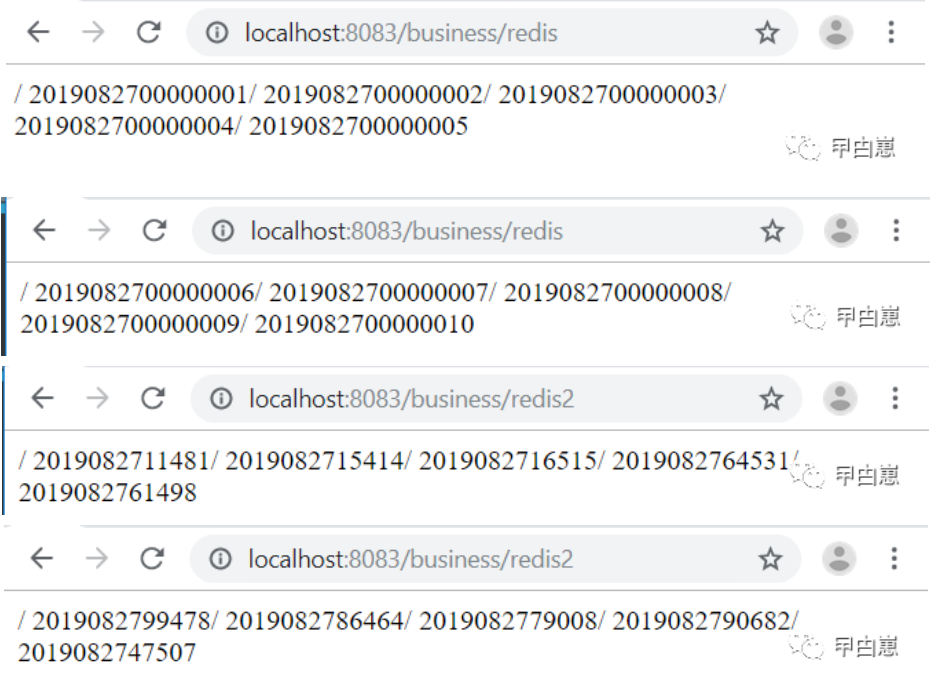
8.项目地址：day10
https://github.com/xiexiaobiao/dubbo-project.git
后记：
1.关于服务间通信：内部服务间通信宜使用私有通信，如RPC，Netty等，效率高，对外使用Restful，兼容性好，因此，项目代码编号day09成为了一个临时版，其实现了MQ独立部署，Restful对内通信的模式，但技术上不可取。
2.redis生产中不会使用单点，常用的是集群式，如三主三从集群，但从使用者角度，有JedisCluster，如操作redisTemplate类似，逻辑上是操作一个，不必考虑后台实现与具体的物理分库存储。
3.看代码，多思考，才有收获，此文中有关于二进制的操作，试问(1L<<-1)可否？为啥使用二进制操作呢？
4.分布式Id方案，有很多，各有特点，生搬硬套行不通，必须根据业务特点取舍和改造。
5.之前在做MQ解析时遇到，一定小心！注意jsonString传输：以下String将发生JSON.parse()错误。"{\"orderId\":\"362951082266333184\",\"URL\":\"http://localhost:8085/delivery/one\"}"，去掉json中的转义字符,可使用StringEscapeUtils.unescapeJava(jsonString)
往期文章导航：